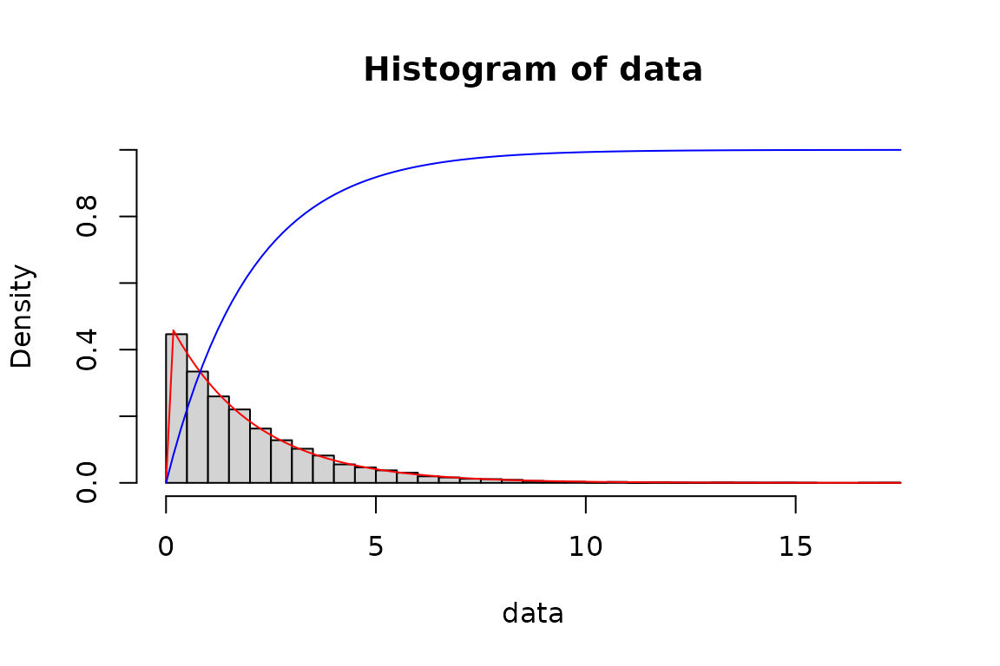

Introduction
To demonstrate the R package algebraic.dst, we consider the relatively simple case of exponentially distributed random variables.
First, we load the R package algebraic.dist with:
Generating a sample
We define the parameters of the i.i.d. random sample with:
n <- 10000
rate <- .5We generate a random sample \(X_i \sim \operatorname{EXP}(\lambda=0.5)\) for \(i=1,\ldots,n\) with:
We have observed a sample of size \(n=10^{4}\). We show some observations from this sample with:
head(data, n = 4)
#> [1] 1.501851 2.003706 1.463567 2.636245Let’s retrieve some functions:
We show a histogram of the sample overlaid with a plot of the exponential function’s pdf, cdf, and survival, with:
hist(data, freq = FALSE, breaks = 40, ylim = c(0, 1))
curve(f(x), add = TRUE, col = "red")
curve(F(x), add = TRUE, col = "blue")
We construct a data frame showing mean and variance for each way three ways of it, using mean and vcov, using expectation (defined for all dist objects using Monte Carlo integration), and using the analytical formulae for the mean and variance of the exponential and the definitions of each, and using the sample mean and sample variance.
expectation(exp.dist, function(x) x^2)
#> $value
#> [1] 8.120095
#>
#> $ci
#> [1] 7.752313 8.487876
#>
#> $n
#> [1] 10000
df <- data.frame(
analytical = c(mean(exp.dist),
vcov(exp.dist)),
mc = c(expectation(exp.dist, function(x) x)$value,
expectation(exp.dist, function(x) (x - mean(exp.dist))^2)$value),
sample = c(mean(data), var(data))
)
row.names(df) <- c("mean", "variance")
print(df)
#> analytical mc sample
#> mean 2 1.987296 1.997524
#> variance 4 3.733742 3.910412We also provide a way of retrieving the support of a distribution:
support <- sup(exp.dist)
contains(support, 2)
#> [1] TRUE
infinum(support)
#> [1] 0
supremum(support)
#> [1] Inf